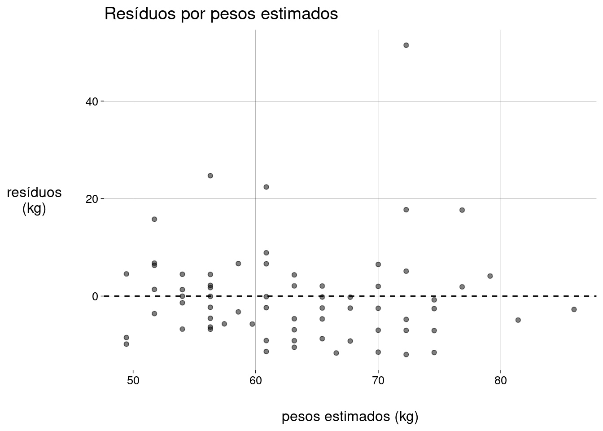
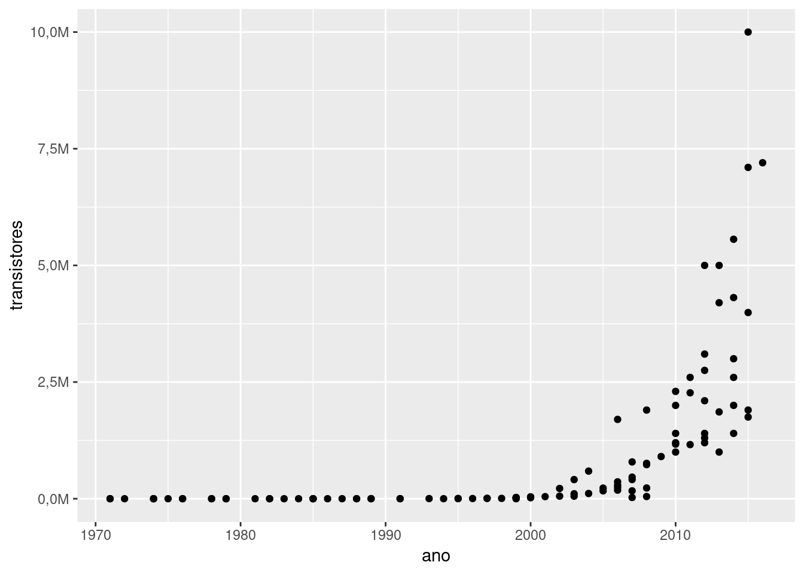
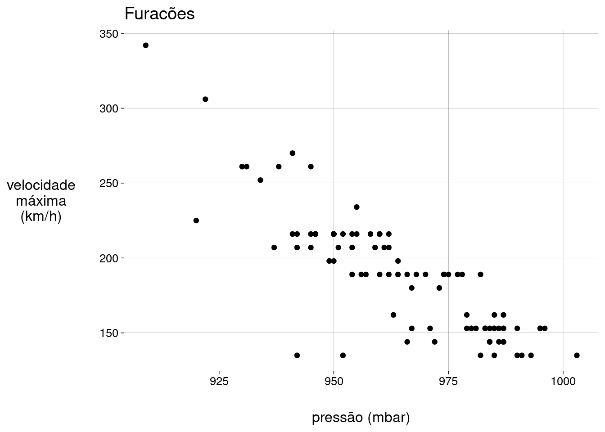
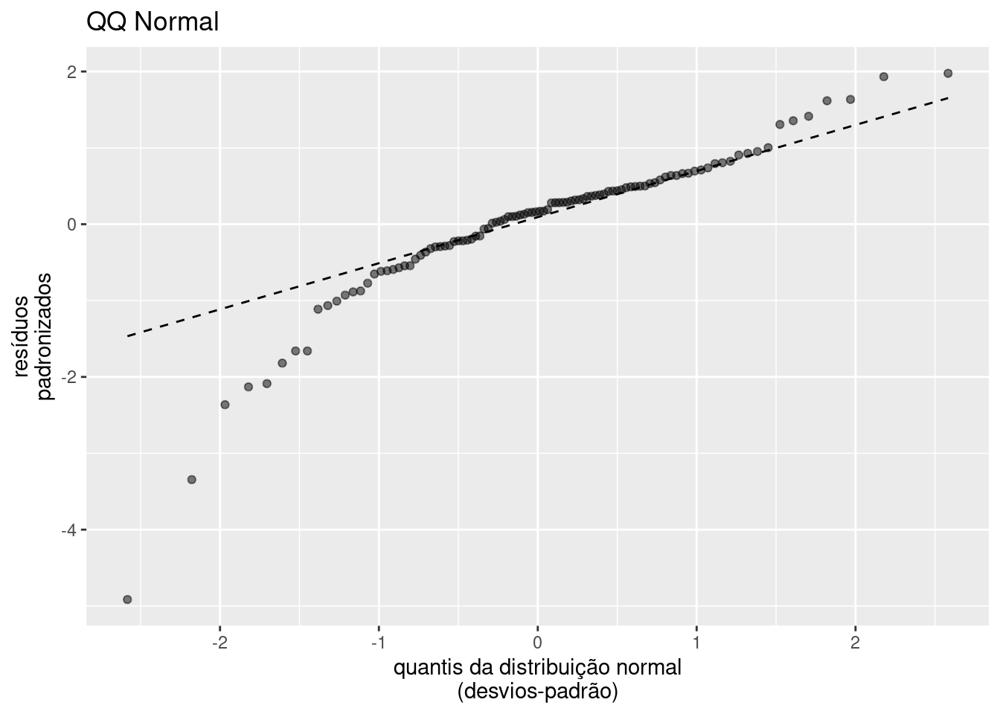

Capítulo 4 Visualização com ggplot2 (continuação)
Busque mais informações sobre os pacotes tidyverse e ggplot2 nas referências recomendadas.
4.2 Boxplots
4.2.2 Mediana e quartis
horas <- sono %>%
pull(sleep_total) %>%
sort()
horas
## [1] 1,9 2,7 2,9 3,0 3,1 3,3 3,5 3,8 3,9 4,0 4,4 5,2 5,3 5,3 5,4 5,6
## [17] 6,2 6,3 6,3 7,0 7,7 8,0 8,3 8,4 8,4 8,6 8,7 8,7 8,9 9,1 9,1 9,4
## [33] 9,4 9,5 9,6 9,7 9,8 9,8 10,0 10,1 10,1 10,1 10,3 10,3 10,4 10,6 10,9 11,0
## [49] 11,0 11,1 11,3 11,5 12,1 12,5 12,5 12,5 12,5 12,8 12,8 13,0 13,5 13,7 13,8 14,2
## [65] 14,3 14,4 14,4 14,5 14,6 14,9 14,9 15,6 15,8 15,8 15,9 16,6 17,0 17,4 18,0 18,1
## [81] 19,4 19,7 19,9
length(horas)
## [1] 83
horas[length(horas) / 2]
## [1] 10,1
median(horas)
## [1] 10,1
mean(horas)
## [1] 10,43373
summary(horas)
## Min. 1st Qu. Median Mean 3rd Qu. Max.
## 1,90 7,85 10,10 10,43 13,75 19,904.2.3 Gerando boxplots
sono %>%
ggplot(aes(y = sleep_total)) +
geom_boxplot(fill = 'gray') +
scale_x_continuous(breaks = NULL) +
scale_y_continuous(breaks = seq(0, 20, 2))
sono %>%
ggplot(aes(x = vore, y = sleep_total)) +
geom_boxplot(fill = 'gray') +
scale_y_continuous(breaks = seq(0, 20, 2))
sono %>%
ggplot(aes(x = vore, y = sleep_total)) +
geom_boxplot(fill = 'gray') +
scale_y_continuous(breaks = seq(0, 20, 2)) +
geom_point(color = 'blue', alpha = .3) +
stat_summary(
fun = mean,
geom = 'point',
color = 'red',
shape = 'cross',
size = 5,
stroke = 1
)
4.4 Gráficos de barras e de colunas
4.4.1 Dataset
HairEyeColor
## , , Sex = Male
##
## Eye
## Hair Brown Blue Hazel Green
## Black 32 11 10 3
## Brown 53 50 25 15
## Red 10 10 7 7
## Blond 3 30 5 8
##
## , , Sex = Female
##
## Eye
## Hair Brown Blue Hazel Green
## Black 36 9 5 2
## Brown 66 34 29 14
## Red 16 7 7 7
## Blond 4 64 5 8
df_orig <- as.data.frame(HairEyeColor) %>%
uncount(Freq) %>%
as_tibble()
df_orig %>% dfSummary() %>% print()| Variável | Estatísticas / Valores | Freqs (% de Válidos) | Grafo | Faltante |
|---|---|---|---|---|
| Hair [factor] |
1. Black 2. Brown 3. Red 4. Blond |
108 (18,2%) 286 (48,3%) 71 (12,0%) 127 (21,5%) |
 |
0 (0,0%) |
| Eye [factor] |
1. Brown 2. Blue 3. Hazel 4. Green |
220 (37,2%) 215 (36,3%) 93 (15,7%) 64 (10,8%) |
 |
0 (0,0%) |
| Sex [factor] |
1. Male 2. Female |
279 (47,1%) 313 (52,9%) |
0 (0,0%) |
cabelo <- c(
'Brown' = 'Castanhos',
'Blond' = 'Louros',
'Black' = 'Pretos',
'Red' = 'Ruivos'
)
olhos <- c(
'Brown' = 'Castanhos',
'Blue' = 'Azuis',
'Hazel' = 'Avelã',
'Green' = 'Verdes'
)
sexo <- c(
'Male' = 'Homem',
'Female' = 'Mulher'
)
df <- df_orig %>%
transmute(
Cabelos = cabelo[Hair],
Olhos = olhos[Eye],
Sexo = sexo[Sex]
)
df %>% dfSummary() %>% print()| Variável | Estatísticas / Valores | Freqs (% de Válidos) | Grafo | Faltante |
|---|---|---|---|---|
| Cabelos [character] |
1. Castanhos 2. Louros 3. Pretos 4. Ruivos |
108 (18,2%) 286 (48,3%) 71 (12,0%) 127 (21,5%) |
 |
0 (0,0%) |
| Olhos [character] |
1. Avelã 2. Azuis 3. Castanhos 4. Verdes |
93 (15,7%) 215 (36,3%) 220 (37,2%) 64 (10,8%) |
 |
0 (0,0%) |
| Sexo [character] |
1. Homem 2. Mulher |
279 (47,1%) 313 (52,9%) |
 |
0 (0,0%) |

df %>%
ggplot(aes(x = fct_infreq(Cabelos), fill = Sexo)) +
geom_bar() +
scale_fill_discrete(type = c('blue', 'red'))
df %>%
ggplot(aes(x = fct_infreq(Cabelos), fill = Sexo)) +
geom_bar() +
scale_fill_discrete(type = c('blue', 'red')) +
coord_flip()
df %>%
ggplot(aes(x = fct_infreq(Cabelos), fill = Sexo)) +
geom_bar(position = 'dodge') +
scale_fill_discrete(type = c('blue', 'red'))
df %>%
ggplot(aes(x = fct_infreq(Cabelos), fill = Olhos)) +
geom_bar() +
scale_fill_discrete(type = c('#908050', 'blue', 'brown', 'green'))
df %>%
ggplot(aes(x = fct_infreq(Cabelos), fill = Olhos)) +
geom_bar(position = 'dodge') +
scale_fill_discrete(type = c('#908050', 'blue', 'brown', 'green'))
df %>%
ggplot(aes(x = fct_infreq(Cabelos), fill = Olhos)) +
geom_bar(position = 'dodge') +
scale_fill_discrete(type = c('#908050', 'blue', 'brown', 'green')) +
facet_wrap(~Sexo) +
labs(
title = 'Cores de cabelos e olhos por sexo',
y = NULL,
x = 'Cabelos'
)
df %>%
ggplot(aes(x = Sexo, fill = fct_infreq(Olhos))) +
geom_bar(position = 'dodge') +
facet_wrap(~Cabelos, labeller = label_both) +
scale_fill_discrete(type = c('brown', 'blue', '#908050', 'green')) +
labs(
x = NULL,
y = NULL,
fill = 'Olhos',
title = 'Cor dos olhos e sexo por cor dos cabelos'
)4.5 Gráficos de linha e séries temporais
4.5.1 Dataset
WorldPhones
## N.Amer Europe Asia S.Amer Oceania Africa Mid.Amer
## 1951 45939 21574 2876 1815 1646 89 555
## 1956 60423 29990 4708 2568 2366 1411 733
## 1957 64721 32510 5230 2695 2526 1546 773
## 1958 68484 35218 6662 2845 2691 1663 836
## 1959 71799 37598 6856 3000 2868 1769 911
## 1960 76036 40341 8220 3145 3054 1905 1008
## 1961 79831 43173 9053 3338 3224 2005 1076
fones <- WorldPhones %>%
as_tibble(rownames = 'Ano') %>%
mutate(Ano = as.numeric(Ano))
fones
fones_long <- fones %>%
pivot_longer(
cols = -Ano,
names_to = 'Região',
values_to = 'n'
)
fones_long
fones_long %>%
ggplot(aes(x = Ano, y = n, group = Região, color = Região)) +
geom_line() +
scale_x_continuous(breaks = 1951:1961)
fones_long %>%
ggplot(
aes(
x = Ano,
y = n,
group = Região,
color = fct_rev(fct_reorder(Região, n))
)
) +
geom_line() +
scale_x_continuous(breaks = 1951:1961) +
labs(
color = 'Região',
y = '',
x = NULL,
title = 'Quantidade de aparelhos de telefone por ano, por região'
)
fones_long %>%
filter(Região %in% c('S.Amer', 'Oceania')) %>%
ggplot(aes(x = Ano, y = n, group = Região, color = Região)) +
geom_line() +
scale_x_continuous(breaks = 1951:1961)
4.6 Referências sobre visualização e R
Busque mais informações sobre os pacotes tidyverse e ggplot2 nas referências recomendadas.